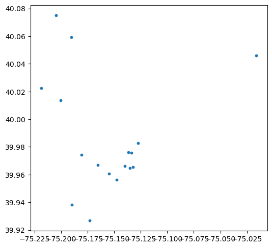
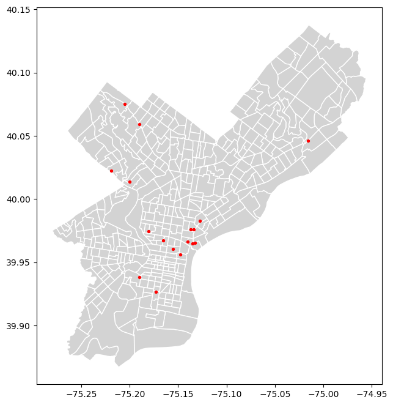

import sys
sys.path.append("../src")
import os
import pandas as pd
import geopandas as gpd
import osmnx as ox
# Custom modules
from data_breweries import fetch_breweries_by_city, breweries_to_geodataframe
from data_acs import load_acs_philly, load_philly_tract_shapes
from data_osm import load_walk_network
API_KEY = os.getenv("CENSUS_API_KEY")
API_KEY01 — Data Collection
This notebook collects all primary datasets for the analysis: - Brewery data from the OpenBreweryDB API
- ACS 5-year estimates for median home value in Philadelphia
- Census tract geometries
- Philadelphia street network from OpenStreetMap via OSMnx
All data is saved to the data/raw/ directory for reproducibility.
Setup
Load packages and custom module functions.
Load the Census API key from the environment (ensuring it is not hardcoded).
Brewery Data Collection (OpenBreweryDB API)
Pull all breweries located in Philadelphia using the by_city parameter.
After pulling, convert the results into a GeoDataFrame and save them as raw data in the repo
# Fetch brewery data
df_brew = fetch_breweries_by_city("philadelphia")
df_brew.head()| id | name | brewery_type | address_1 | address_2 | address_3 | city | state_province | postal_code | country | longitude | latitude | phone | website_url | state | street | |
|---|---|---|---|---|---|---|---|---|---|---|---|---|---|---|---|---|
| 0 | fb8eee34-da8a-42b2-bc4c-77020024a7f0 | 2nd Story Brewing Company | brewpub | 117 Chestnut St Frnt | None | None | Philadelphia | Pennsylvania | 19106-4700 | United States | NaN | NaN | 2673145770 | http://www.2ndstorybrewing.com/ | Pennsylvania | 117 Chestnut St Frnt |
| 1 | 87d71c35-9537-4ef1-b232-668bea736ffa | Attic Brewing | planning | None | None | None | Philadelphia | Pennsylvania | 19144-3603 | United States | NaN | NaN | 7082047376 | None | Pennsylvania | None |
| 2 | a834c4b5-4852-4887-aa6f-c872dfc10824 | Bar Hygge / Brewery Techne | brewpub | 1720 Fairmount Ave | None | None | Philadelphia | Pennsylvania | 19130-2858 | United States | -75.165673 | 39.967073 | None | None | Pennsylvania | 1720 Fairmount Ave |
| 3 | 6b04fb31-0531-49fc-8dbf-517138e6c1dd | Brewery ARS | micro | 1927-29 W Passyunk Ave | None | None | Philadelphia | Pennsylvania | 19145-3620 | United States | NaN | NaN | 2159605173 | http://breweryars.com | Pennsylvania | 1927-29 W Passyunk Ave |
| 4 | 6660d8a1-2668-4096-9510-92ea23e6371e | Crime & Punishment Brewing Company | brewpub | 2711 W Girard Ave | None | None | Philadelphia | Pennsylvania | 19130-1212 | United States | -75.180842 | 39.974365 | 2152352739 | http://www.crimeandpunishmentbrewery.com | Pennsylvania | 2711 W Girard Ave |
# Convert to GeoDataFrame
gdf_brew = breweries_to_geodataframe(df_brew)
gdf_brew.head()| id | name | brewery_type | address_1 | address_2 | address_3 | city | state_province | postal_code | country | longitude | latitude | phone | website_url | state | street | geometry | |
|---|---|---|---|---|---|---|---|---|---|---|---|---|---|---|---|---|---|
| 2 | a834c4b5-4852-4887-aa6f-c872dfc10824 | Bar Hygge / Brewery Techne | brewpub | 1720 Fairmount Ave | None | None | Philadelphia | Pennsylvania | 19130-2858 | United States | -75.165673 | 39.967073 | None | None | Pennsylvania | 1720 Fairmount Ave | POINT (-75.16567 39.96707) |
| 4 | 6660d8a1-2668-4096-9510-92ea23e6371e | Crime & Punishment Brewing Company | brewpub | 2711 W Girard Ave | None | None | Philadelphia | Pennsylvania | 19130-1212 | United States | -75.180842 | 39.974365 | 2152352739 | http://www.crimeandpunishmentbrewery.com | Pennsylvania | 2711 W Girard Ave | POINT (-75.18084 39.97436) |
| 7 | 18b29afa-682c-4c5e-8ecb-ba0f61cf9f16 | Earth Bread + Brewery | brewpub | 7136 Germantown Ave | None | None | Philadelphia | Pennsylvania | 19119-1843 | United States | -75.190355 | 40.059200 | 2152426666 | http://www.earthbreadbrewery.com | Pennsylvania | 7136 Germantown Ave | POINT (-75.19035 40.05920) |
| 8 | 339caa7a-481f-4315-bba1-bca6b74d8b89 | Evil Genius Beer Co | micro | 1727 N Front St | None | None | Philadelphia | Pennsylvania | 19122-3203 | United States | -75.134016 | 39.975780 | 2154256820 | http://www.evilgeniusbeer.com | Pennsylvania | 1727 N Front St | POINT (-75.13402 39.97578) |
| 9 | e8f67941-37fa-41bd-8c4b-ca598a144217 | Fermentery Form | micro | 161 Cecil B Moore Ave | None | None | Philadelphia | Pennsylvania | 19122-3234 | United States | -75.136886 | 39.976092 | 2675183676 | http://www.fermenteryform.com | Pennsylvania | 161 Cecil B Moore Ave | POINT (-75.13689 39.97609) |
# Save raw brewery data
gdf_brew.to_file("../data/raw/breweries_philly.geojson", driver="GeoJSON")gdf_brew.plot(figsize=(6,6), markersize=10)
ACS Median Home Value + Tract Boundaries
Retrieve median home value (B25077_001E) from the ACS 5-year dataset for all census tracts in Philadelphia County. Download tract geometries via TIGER/Line files.
# Load ACS median home value for Philadelphia tracts
df_acs = load_acs_philly(API_KEY)
df_acs.head()| NAME | median_home_value | state | county | tract | GEOID | |
|---|---|---|---|---|---|---|
| 0 | Census Tract 1.01; Philadelphia County; Pennsy... | 511400.0 | 42 | 101 | 000101 | 42101000101 |
| 1 | Census Tract 1.02; Philadelphia County; Pennsy... | 508100.0 | 42 | 101 | 000102 | 42101000102 |
| 2 | Census Tract 2; Philadelphia County; Pennsylvania | 483700.0 | 42 | 101 | 000200 | 42101000200 |
| 3 | Census Tract 3; Philadelphia County; Pennsylvania | 669800.0 | 42 | 101 | 000300 | 42101000300 |
| 4 | Census Tract 4.01; Philadelphia County; Pennsy... | 587400.0 | 42 | 101 | 000401 | 42101000401 |
from data_acs import load_philly_tract_shapes
gdf_tracts = load_philly_tract_shapes(2022)
gdf_tracts.head()Downloading from: https://www2.census.gov/geo/tiger/TIGER2022/TRACT/tl_2022_42_tract.zip| STATEFP | COUNTYFP | TRACTCE | GEOID | NAME | NAMELSAD | MTFCC | FUNCSTAT | ALAND | AWATER | INTPTLAT | INTPTLON | geometry | |
|---|---|---|---|---|---|---|---|---|---|---|---|---|---|
| 98 | 42 | 101 | 026301 | 42101026301 | 263.01 | Census Tract 263.01 | G5020 | S | 406340 | 0 | +40.0728148 | -075.1637161 | POLYGON ((-75.16899 40.07147, -75.16864 40.071... |
| 99 | 42 | 101 | 029200 | 42101029200 | 292 | Census Tract 292 | G5020 | S | 1745920 | 28444 | +40.0249035 | -075.1017831 | POLYGON ((-75.11288 40.02746, -75.11280 40.027... |
| 100 | 42 | 101 | 024400 | 42101024400 | 244 | Census Tract 244 | G5020 | S | 421189 | 0 | +40.0248284 | -075.1638925 | POLYGON ((-75.16912 40.02387, -75.16843 40.024... |
| 101 | 42 | 101 | 033200 | 42101033200 | 332 | Census Tract 332 | G5020 | S | 842716 | 0 | +40.0439733 | -075.0449684 | POLYGON ((-75.05465 40.04465, -75.05396 40.045... |
| 102 | 42 | 101 | 980200 | 42101980200 | 9802 | Census Tract 9802 | G5020 | S | 4916641 | 250846 | +40.0712811 | -075.0443487 | POLYGON ((-75.07448 40.08685, -75.07443 40.087... |
df_acs.to_csv("../data/raw/acs_philly_median_home_value.csv", index=False)
gdf_tracts.to_file("../data/raw/tracts_philly.geojson", driver="GeoJSON")Philadelphia Street Network (OSMnx)
Download the walkable street network for Philadelphia using OSMnx. This will be used later to compute walking distances and brewery accessibility.
G = load_walk_network()
G<networkx.classes.multidigraph.MultiDiGraph at 0x2578d523490>ox.save_graphml(G, "../data/raw/philly_walk_network.graphml")Visual Checks
Before moving to the next step, confirm that: - Brewery points fall inside Philadelphia
- Tracts load correctly
- CRS matches expectations (EPSG:4326 for ACS/breweries)
ax = gdf_tracts.plot(figsize=(8,8), color="lightgrey", edgecolor="white")
gdf_brew.plot(ax=ax, color="red", markersize=8)
Summary
In this notebook, we successfully collected:
- Philadelphia brewery locations (OpenBreweryDB API)
- ACS 5-year median home value estimates
- Census tract geometries
- The walkable street network for Philadelphia (OSMnx)
All datasets are saved in data/raw/ and are ready for cleaning
and feature engineering in Notebook 2.